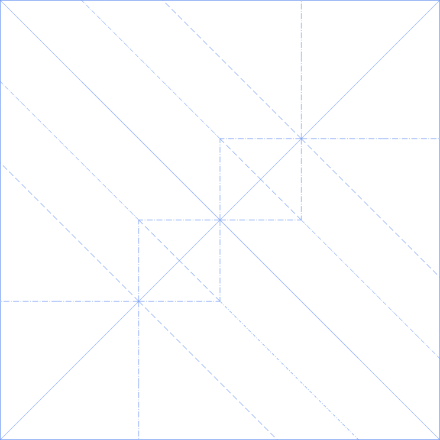
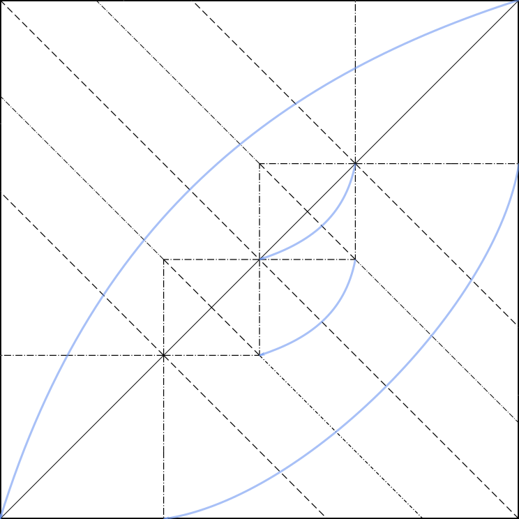
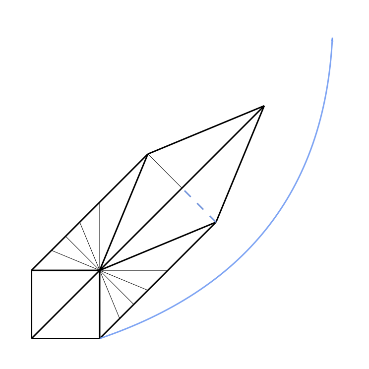
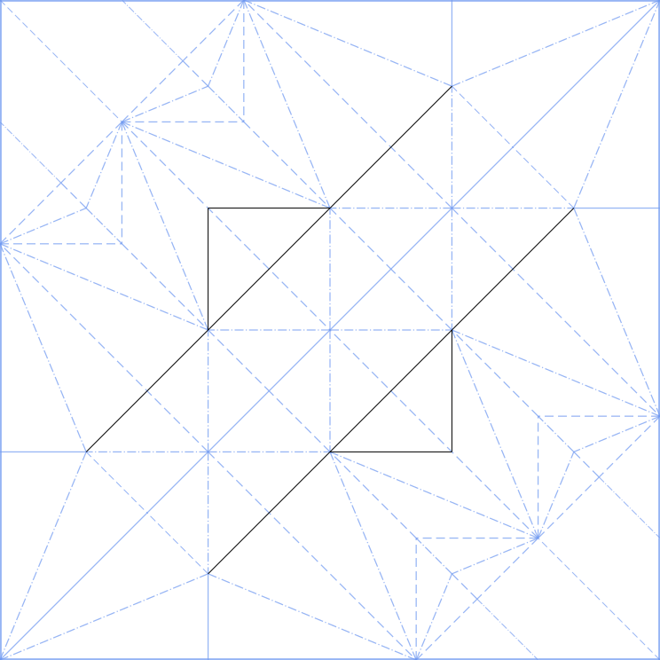
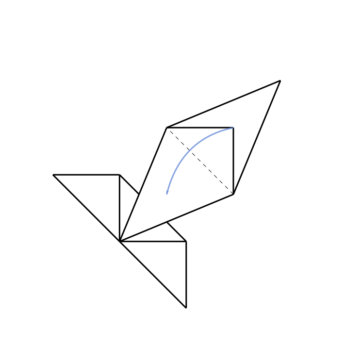
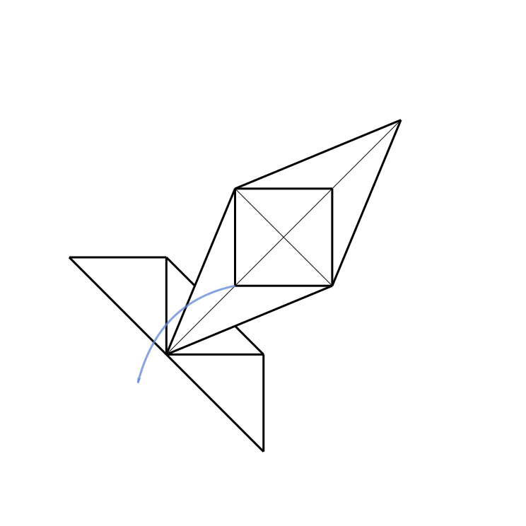
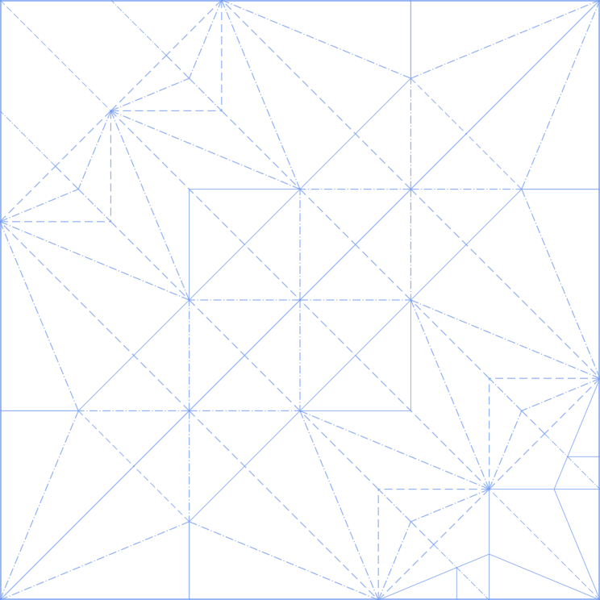
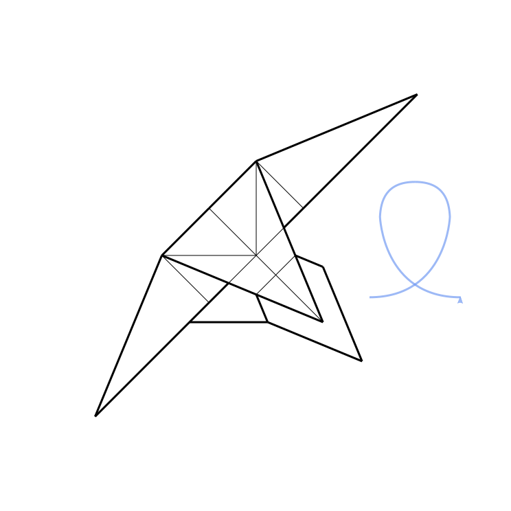
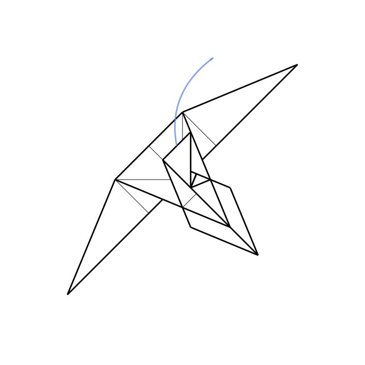
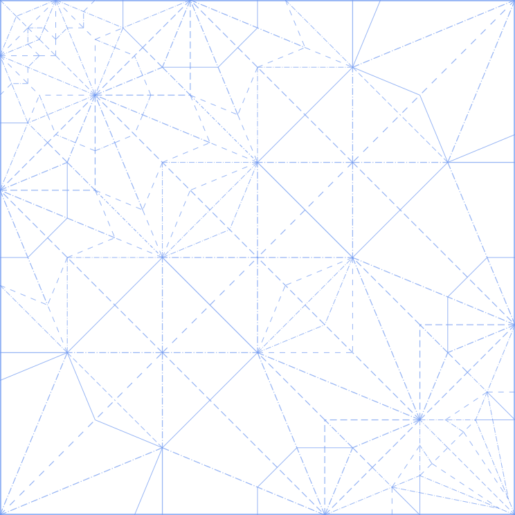

Western Dragon
Casey Shields - caseyorigami@gmail.com
Use zoom +/- in you browser to size the diagrams.

1
Construct the landmarks of the base

1.a

1.b

1.c
1.d

1.e
2
Fold a grafted bird base.
2.a

2.b

2.c
2.d
Flip 2 of 4 flaps over to reveal the center graft

2.e
3
Form Y bases in graft.
3.a

3.b
3.c

3.d

3.e
3.f
3.g

3.h
3.i

3.j

4
Form Y bases in graft.

4.a
Flip back the two flaps so the bird base is on top.

4.b
4.c

4.d

4.e

4.f
Just to get it out of the way, flip up one half of the model.
4.g
Perfom a double inside reverse fold, using the existing creases. Push the two flaps on the left between the three flaps on the right.

4.h
Crimp using existing creases.

4.i
4.j
Repeat on opposite side.

4.k
5
Stretch base and form back.
5.a

5.b
Fold two flaps down.
5.c
Undo.
5.d
Repeat on opposite side, so the center flap has been folded in both directions.

5.e
Stretch and flatten the center flap.
5.f
5.g

5.h

6
Fold rear legs and tail.
6.a
6.b
Pull the center flap through the two legs.
6.c
Repeat on rear.

6.d
6.e

6.f
6.g

6.h
7
Fold fore legs and neck.

7.a
7.b
7.c

7.d

7.e
At this point we have made all the precreases for two Y-bases which help form the forelegs, neck and horns.

7.f
7.g
Now we precrease a fish base to form the head and horns.

7.h
unfold.
7.i
Using the existing precreases, fold the two Y-bases.

7.j
7.k

8
Fold shoulders of wings.
8.a
Precrease for the wing's shoulder.

8.b

8.c

8.d

8.e
Optionally, you can crimp each flap of the wing's shoulder for a cleaner look and a locking effect.
8.f
In the two center two flaps, fold a fish base.
8.g
Move the legs out of way.

3
Shape tail.
9.a
9.b

9.c
10
Fold head and horns.
10.a
Move center flap out of the way for this variant of the head.
10.b
10.c
Use the existing creases then pull the horns up to perpendicular before finishing the crease.

11.a
Shape hips and shoulders.

11.b

11.c
11.d
Spread out limbs to a natural pose and fold down wings.
11.e
This is just a possible finishing sequence; experiment with poses and styles!
12.a
Alternate CP with jaw and eye details, but a smaller head.

12.b
Larger head but smaller horns. It is possible to add a toungue.